6 Week 6: Climate Projections and Impacts (III)
The goal of this tutorial is to identify regions with dynamic feedback mechanisms during the historical period as well as under future climate conditions. In this exercise we will focus on the temperature-albedo feedback. The main steps are:
- Download data (near-surface air temperature \(tas\), surface downwelling radiation \(rsds\), and surface upwelling radiation \(rsus\))
- Calculate albedo \(albs\): \(albs = rsus / rsds\)
- Calculate anomalies
- Detrend time series
- Conduct Granger causality test
Load libraries
rm(list = ls())
library(terra)
library(maps)
library(ClimInd)
library(climetrics)
library(rts)
library(vars)Today you will work with the following climate model data from ESGF:
Monthly Surface downwelling shortwave radiation (rsds), CanESM5, SSP5-8.5
Monthly Surface upwelling shortwave radiation (rsus), CanESM5, SSP5-8.5
I have added those files to our shared_files folder. In the Winter term you will need to download your own data sets. Here is how you would download the files to your home directory:
Read in data
tas <- terra::rast("/global/home/hpc5112/ENSC430/shared_files/tas_Amon_CanESM5_historical_r1i1p1f1_gn_185001-201412.nc")
rsus <- terra::rast("/global/home/hpc5112/ENSC430/shared_files/rsus_Amon_CanESM5_historical_r1i1p1f1_gn_185001-201412.nc")
rsds <- terra::rast("/global/home/hpc5112/ENSC430/shared_files/rsds_Amon_CanESM5_historical_r1i1p1f1_gn_185001-201412.nc")
albs <- rsus/rsds
# tas <- terra::rast("/global/home/hpc5112/ENSC430/shared_files/tas_Amon_CanESM5_ssp585_r1i1p1f1_gn_201501-210012.nc")
# rsds <- terra::rast("/global/home/hpc5112/ENSC430/shared_files/rsds_Amon_CanESM5_ssp585_r1i1p1f1_gn_201501-210012.nc")
# rsus <- terra::rast("/global/home/hpc5112/ENSC430/shared_files/rsus_Amon_CanESM5_ssp585_r1i1p1f1_gn_201501-210012.nc")
# albs <- rsus/rsds
# Plot first time step of tas and albedo to see if they look OK
tas1 <- subset(tas, 1)
albs1 <- subset(albs, 1)
par(mfrow = c(2,1))
plot(tas1, main = "Near-surface Air Temperature (K)")
map("world2", add = TRUE, interior = FALSE)
plot(albs1, main = "Surface Albedo (-)")
map("world2", add = TRUE, interior = FALSE)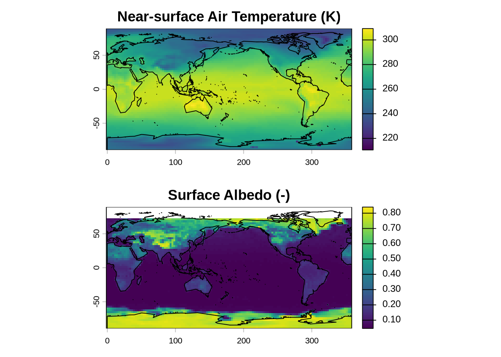
- You can see that there are no values in the Arctic in the first time step (January). How come? The Granger causality test will fail if there is NA. We will need to exclude this region from our analysis as Granger causality cannot deal with missing values.
Next, calculate 12-month climatologies.
library(climetrics)
# Get the dates
dates <- terra::time(tas)
dates <- format(dates, "%Y-%m-%d")
dates <- base::as.Date(dates)
# Create raster time series
tas.ts <- rts(tas, dates)
albs.ts <- rts(albs, dates)
# Calculate 12-month climatological means
tas.12 <- apply.months(tas.ts,'mean')
albs.12 <- apply.months(albs.ts,'mean')
plot(albs.12)
map("world2", add = TRUE, interior = FALSE)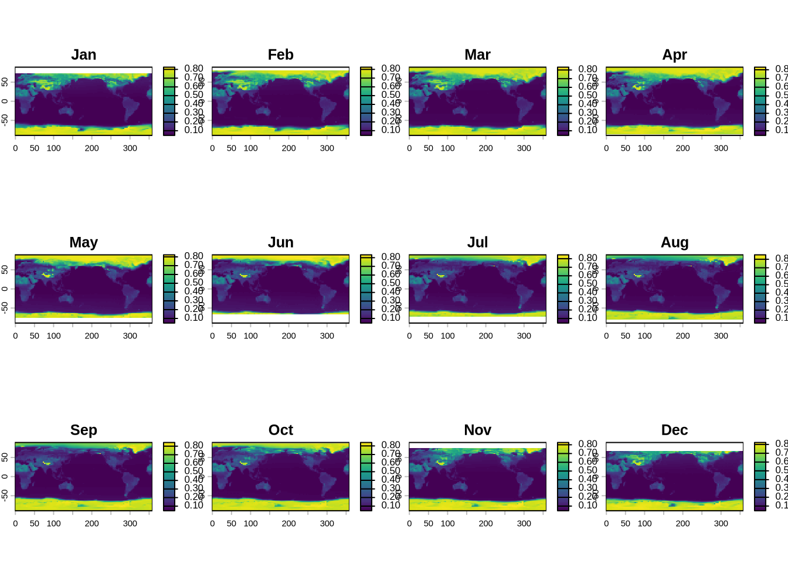
Calculate the anomalies. This is done by subtracting the 12-month climatologies from the monthly data.
# Get the number of years
n <- length(dates)/12
# Create a time series where the 12-month climatological mean repeats for all years
tas.clim <- rep(tas.12, n)
albs.clim <- rep(albs.12, n)
# Calculate anomalies
tas.anom <- tas - tas.clim
albs.anom <- albs - albs.clim
# Have a look at the data
plot(albs.anom)
map("world2", add = TRUE, interior = FALSE)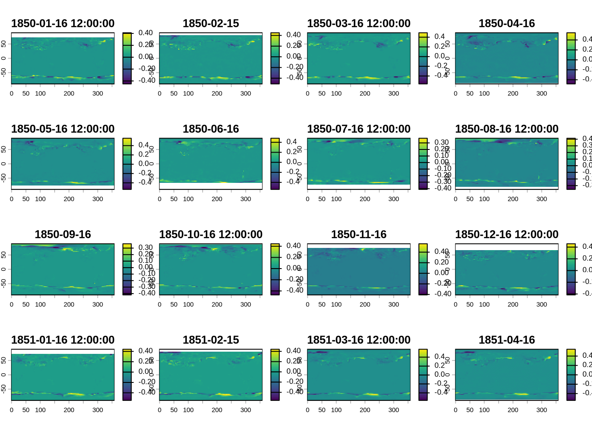
Detrend your time series by defining a function that calculates and removes the linear trend from your monthly anomalies. Before we do this for our globally gridded data set, let’s first practice using a random time series.
# Define a function that removes a linear trend
detrend.fun <- function(x) {
time <- 1:length(x)
linear.trend <- lm(formula = x ~ time, na.action = na.exclude)
detrended.series <- residuals(linear.trend)
return(detrended.series)
}
# Generate a time series with a trend
set.seed(123)
time <- seq(1:100)
time.series <- ts(time + rnorm(100, mean = 0, sd = 10))
# Test the function
detrended.time.series <- detrend.fun(time.series)
plot(time.series, ylim = c(-20, 120))
lines(detrended.time.series, col = "red")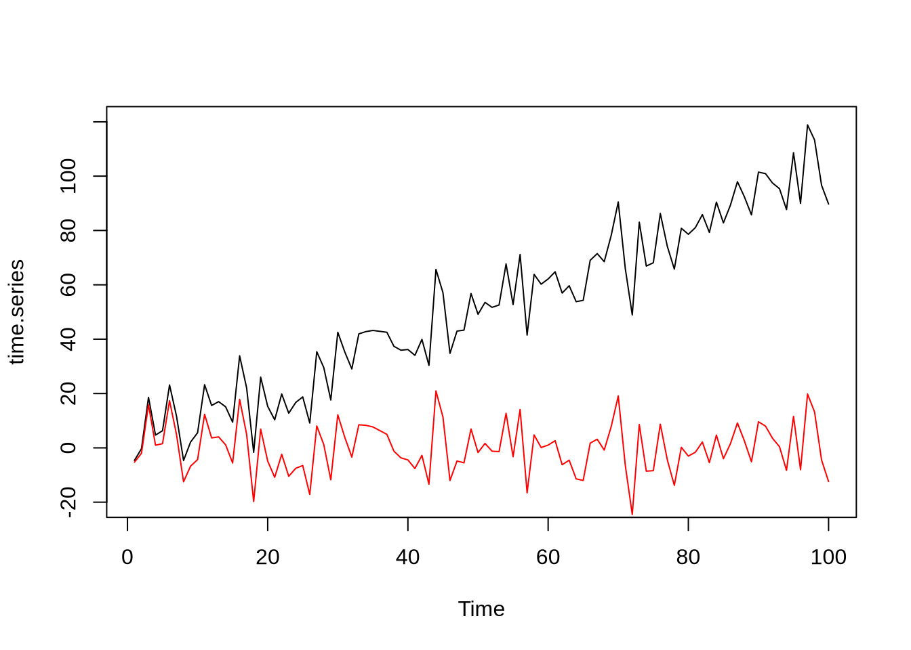
With the detrending confirmed to work, let’s apply it to our gridded temperature and albedo datasets.
tas.anom.detrend <- app(x = tas.anom, fun = detrend.fun)
albs.anom.detrend <- app(x = albs.anom, fun = detrend.fun)
plot(tas.anom.detrend)
map("world2", add = TRUE, interior = FALSE)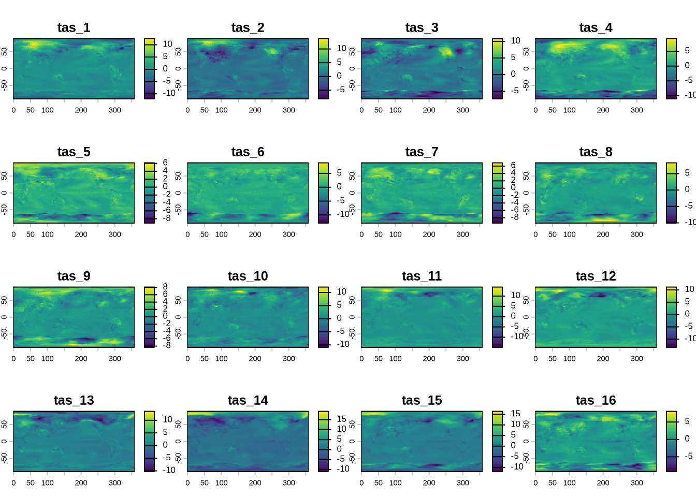
Now that you have created detrended anomalies of surface albedo and near-surface air temperature, you can assess the statistical association between both time series using Granger causality. Start by defining a Granger causality function that we can apply to each gridcell.
granger.fun <- function(x) {
n <- length(x)
# Get first (a) and second (b) variable
a <- x[1:(n/2)]
b <- x[(n/2+1):n]
# Convert to time series
a <- ts(a)
b <- ts(b)
tsDat <- ts.union(a, b)
tsVAR <- vars::VAR(tsDat, p = 12)
# Apply Granger causality test
p.value <- c(vars::causality(tsVAR, cause = "a")$Granger[3]$p.value)
return(p.value)
}Check whether albedo Granger-causes temperature anomalies.
# Stack your raster objects, where the first part is the cause and the second the response
data <- c(albs.anom.detrend, tas.anom.detrend)
# Let's focus on N. America and exclude high latitudes where albedo is NA due to lack of sunshine
data <- crop(x=data, y = c(157, 350, 30, 65))
# Assess Granger causality
p.value <- app(x = data, fun = granger.fun)
# Create a boolean map where all locations with p-values < 0.01 equal 1 and all remaining gridcells equal zero
p.value[p.value>=0.01] <- 0
p.value[p.value>0] <- 1
albedoCausesTas <- p.value
plot(albedoCausesTas, col = c("white", "orange"), main = "Albedo Granger-causes Temperature Anomalies")
map("world2", add = TRUE, interior = FALSE)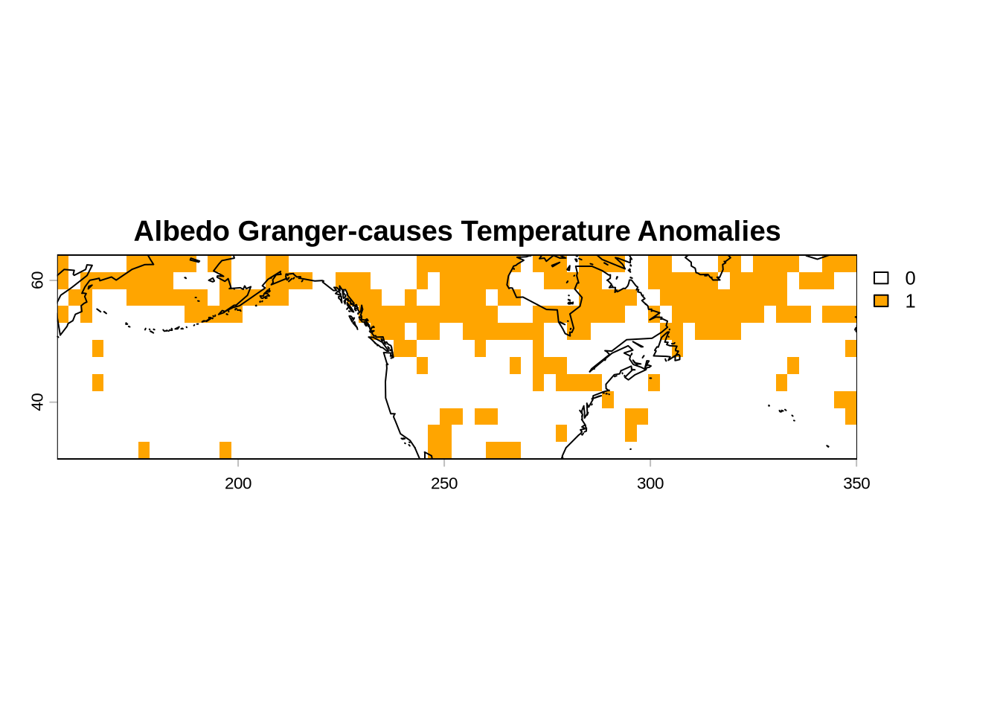
Next, check whether temperature Granger-causes albedo anomalies
# Stack your raster objects, where the first part is the cause and the second the response
data <- c(tas.anom.detrend, albs.anom.detrend)
# Let's focus on N. America and exclude high latitudes where albedo is NA due to lack of sunshine
data <- crop(x=data, y = c(157, 350, 30, 65))
# Assess Granger causality
p.value <- app(x = data, fun = granger.fun)
# Create a boolean map where all locations with p-values < 0.05 equal 1 and all remaining gridcells equal zero
p.value[p.value>=0.01] <- 0
p.value[p.value>0] <- 1
tasCausesAlbedo <- p.value
plot(tasCausesAlbedo, col = c("white", "orange"), main = "Temperature Granger-causes Albedo Anomalies")
map("world2", add = TRUE, interior = FALSE)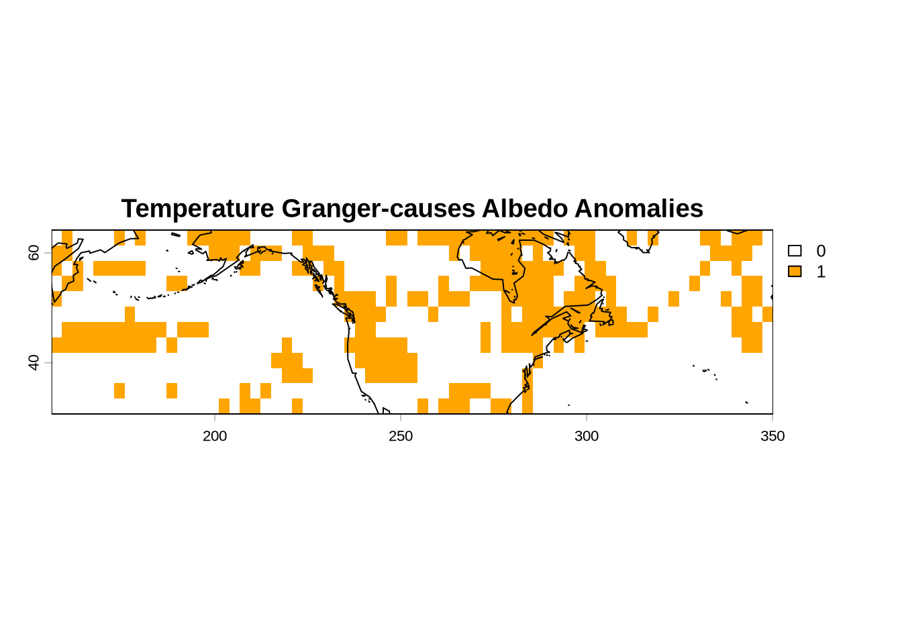
Let’s combine both maps to identify regions with a dynamic albedo-temperature feedback
feedback <- albedoCausesTas + tasCausesAlbedo
feedback[feedback != 2] <- NA
feedback <- feedback - feedback + 1
plot(feedback, col = "orange", main = "Albedo-Temperature Feedback")
map("world2", add = TRUE, interior = FALSE)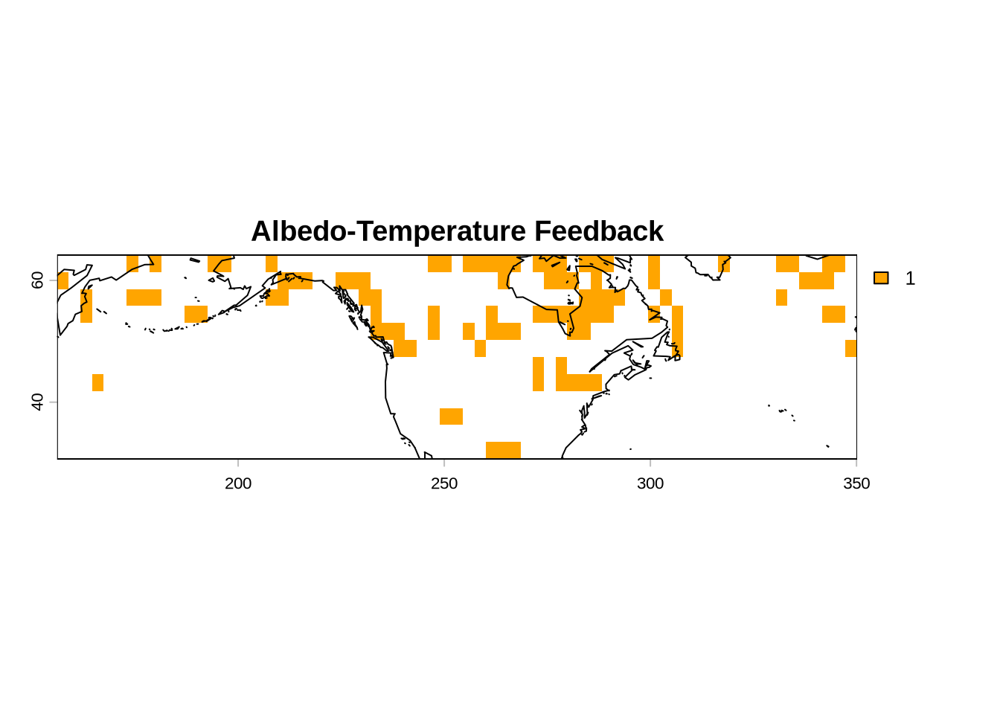
Next you will verify your results for a single gridcell. Let’s choose a place in the Canadian Arctic (longitude = 260, latitude = 60).
lon <- 260
lat <- 62
coords <- matrix(c(lon, lat), ncol = 2, byrow = TRUE)
location <- vect(coords, type = "points")
plot(feedback, col = "orange")
map("world2", add = TRUE, interior = FALSE)
points(location, col = "red", pch = 16, cex = 1.0)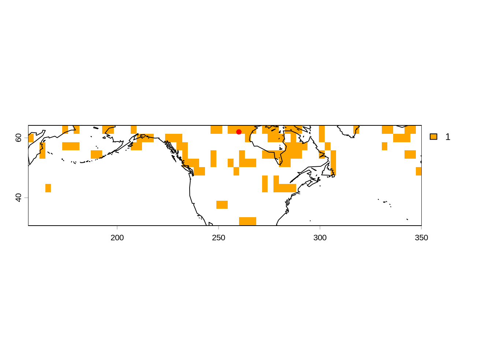
Extract the values for this location
# Extract data for the location
albs.anom.detrend.gc <- terra::extract(albs.anom.detrend, location)
tas.anom.detrend.gc <- terra::extract(tas.anom.detrend, location)
# Get the values and drop the layer names
albs.anom.detrend.gc <- unlist(unname(as.vector(albs.anom.detrend.gc)))
tas.anom.detrend.gc <- unlist(unname(as.vector(tas.anom.detrend.gc)))
# Omit the first time step
n <- length(albs.anom.detrend.gc)
albs.anom.detrend.gc <- albs.anom.detrend.gc[2:n]
tas.anom.detrend.gc <- tas.anom.detrend.gc[2:n]
# Make a time series
albs <- ts(albs.anom.detrend.gc)
tas <- ts(tas.anom.detrend.gc)
tsDat <- ts.union(albs, tas)
# Plot time series
plot(tsDat)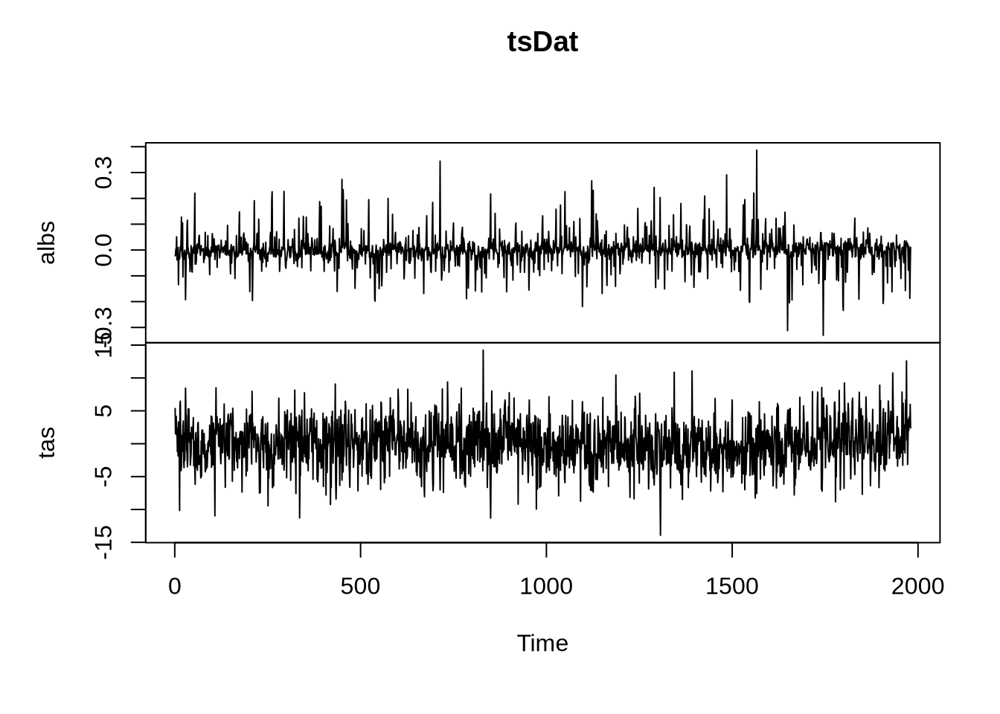
Run Granger causality again just for this dataset to verify your results
## $Granger
##
## Granger causality H0: albs do not Granger-cause tas
##
## data: VAR object tsVAR
## F-Test = 7.4266, df1 = 6, df2 = 3922, p-value = 6.354e-08
##
##
## $Instant
##
## H0: No instantaneous causality between: albs and tas
##
## data: VAR object tsVAR
## Chi-squared = 68.392, df = 1, p-value < 2.2e-16
vars::causality(tsVAR, cause = "tas")## $Granger
##
## Granger causality H0: tas do not Granger-cause albs
##
## data: VAR object tsVAR
## F-Test = 2.5832, df1 = 6, df2 = 3922, p-value = 0.01686
##
##
## $Instant
##
## H0: No instantaneous causality between: tas and albs
##
## data: VAR object tsVAR
## Chi-squared = 68.392, df = 1, p-value < 2.2e-16Repeat the same exercise with CanESM for the future period using SSP5-8.5 and evaluate how this feedback mechanism changes. You can download the corresponding files below.
Monthly Surface downwelling shortwave radiation (rsds), CanESM5, SSP5-8.5
Monthly Surface upwelling shortwave radiation (rsus), CanESM5, SSP5-8.5
I have added those files to our shared_files folder. Your results should look like the figure below. What does this figure tell you of how climate change affects the relationship between temperature and albedo?
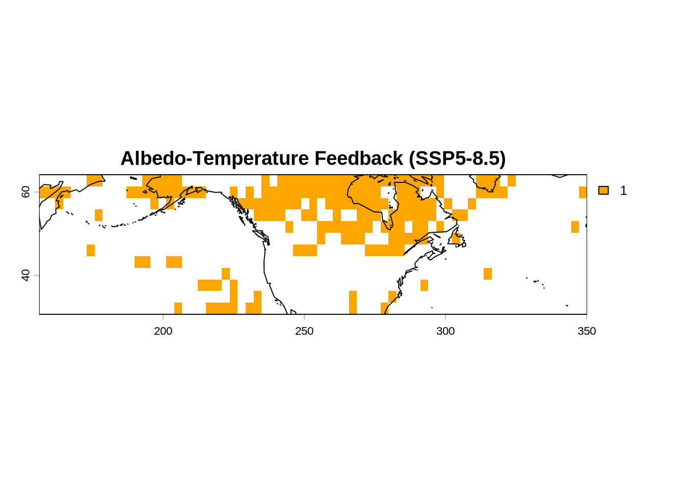